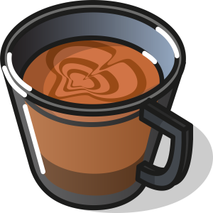

Café Delicioso
Mejores Productos
Café Frappe

Es una bebida refrescante y dulce que se consume principalmente en verano o en climas cálidos, aunque se disfruta en cualquier época del año.
Irish Coffee

La preparación del Irish coffee implica preparar un café caliente y agregar una cucharada de azúcar y una medida de whisky irlandés a la taza.
Capuchino
El resultado final es una bebida caliente con una textura suave y cremosa, y un sabor equilibrado entre el espresso y la leche.
Cookies

son redondos y crujientes que se hornean en el horno. Son muy populares en todo el mundo y se pueden encontrar en una gran variedad.
Donas

Hay muchos tipos diferentes de donas, desde las clásicas donas glaseadas hasta las rellenas de mermelada o crema, bañadas en chocolates.
En pedido superior a $1500
100% garantía
con bonos especiales
LLámenos las 24 hs al 123-456-7890